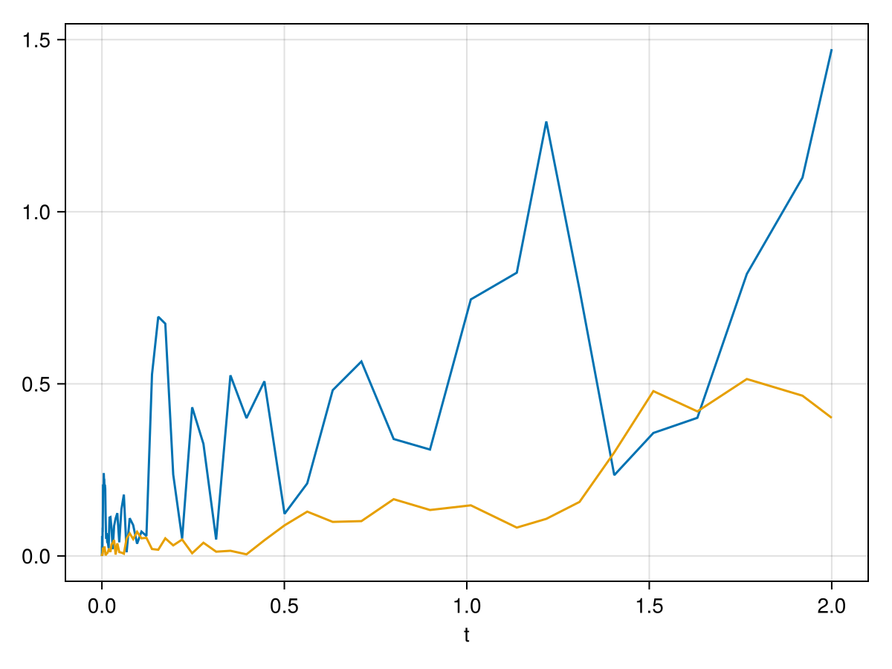
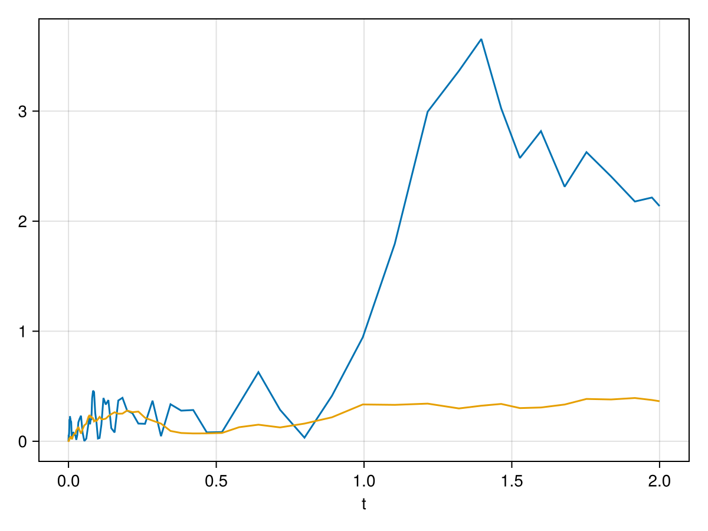
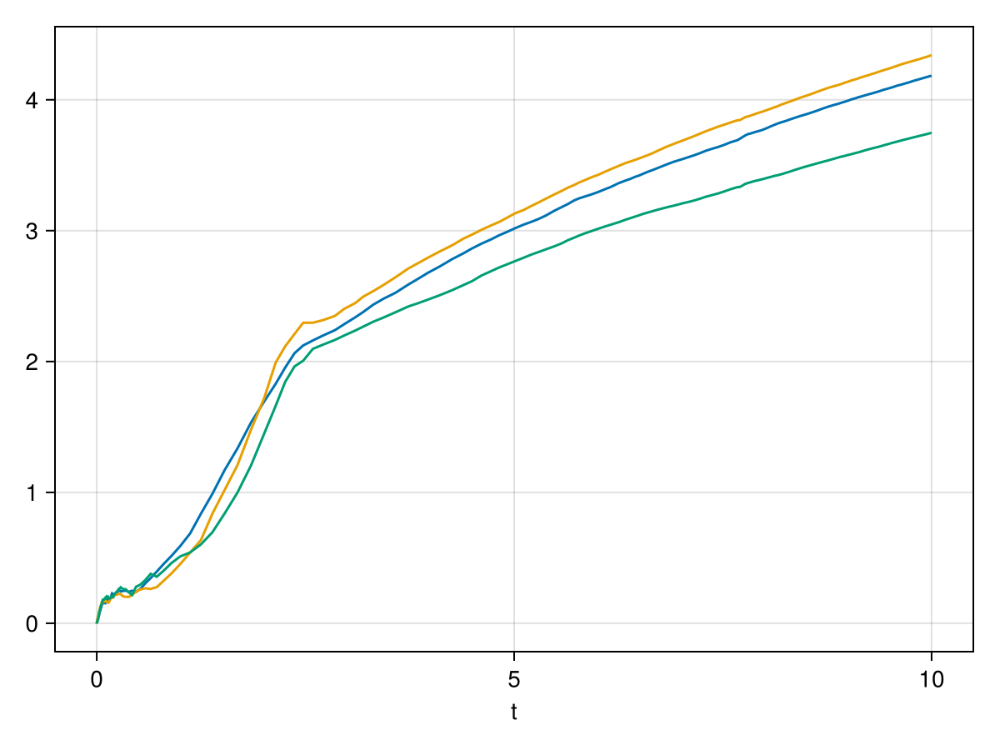

Making Neuroblox models work with GraphDynamics
In this notebook I'll show some toy examples of Neuroblox systems and make them interoperate with GraphDynamics.
There are some functions in Neuroblox.GraphDynamicsInterop to try and automate this process, but I'm going to show you here the "manual" way of doing this, which is typically going to be better supported and more powerful / robust.
using Neuroblox, ModelingToolkit, GraphDynamics
using Neuroblox.GraphDynamicsInterop: GraphDynamicsInterop, BasicConnection
using Neuroblox:
paramscoping,
NeuralMassBlox,
get_namespaced_sys,
generate_weight_param,
Connector
using CairoMakie, StochasticDiffEqVan der Pol
First, let's consider something that's suspiciously like the noisy Van der Pol oscillator in Neuroblox/src/blox/neural_mass.jl, except:
- It has 2 inputs instead of only 1 (I added jcn_x as an additional complication)
- It has some 'computed variables' (i.e. variables which don't really exist in the system solution, but can be calulated based on its parameters and states)
struct VanDerPol <: NeuralMassBlox
name
params
system
namespace
function VanDerPol(; name, namespace=nothing, θ=1.0, ϕ=0.1)
p = paramscoping(θ=θ, ϕ=ϕ)
θ, ϕ = p
sts = @variables begin
# our regular dynamical variables
x(t)=0.0
[output=true]
y(t)=0.0
# our algebraic inputs (these are really computed variables too)
jcn_x(t)
[input=true]
jcn(t)
[input=true]
# our extra computed variables
jcn_tot(t)
r(t)
end
@brownian ξ
eqs = [
# Dynamical equations
D(x) ~ y + jcn_x,
D(y) ~ θ*(1-x^2)*y - x + ϕ*ξ + jcn,
# Extra computed variables
jcn_tot ~ jcn_x + jcn,
r ~ √(x^2 + y^2)
]
sys = System(eqs, t, sts, p; name=name)
new(name, p, sys, namespace)
end
end;GraphDynamics version
Converting to Subsystem
GraphDynamics.jl uses a type called Subsystem which is really a bundle around a SubsystemStates which stores the dynamical states of an object, and SubsystemParams which stores whatever parameters might affect the evolution of the object (or be important to it in some other way).
We need to teach GraphDynamicsInterop how to convert a VanDerPol into a Subsystem{VanDerPol}
function GraphDynamicsInterop.to_subsystem(v::VanDerPol)
# Extract the default values of the parameters θ and ϕ
θ = GraphDynamicsInterop.recursive_getdefault(v.θ)
ϕ = GraphDynamicsInterop.recursive_getdefault(v.ϕ)
params = SubsystemParams{VanDerPol}(; θ, ϕ)
# Extract the default values of dynamical states x and y
x = GraphDynamicsInterop.recursive_getdefault(v.x)
y = GraphDynamicsInterop.recursive_getdefault(v.y)
states = SubsystemStates{VanDerPol}(; x, y)
# Form a Subsystem from the states and params
Subsystem(states, params)
endHere it is in action:
let @named v = VanDerPol(;θ=10.0)
sys = GraphDynamicsInterop.to_subsystem(v)
@info "States and params out of a Subsystem:" sys.x sys.y sys.θ sys.ϕ
end┌ Info: States and params out of a Subsystem:
│ sys.x = 0.0
│ sys.y = 0.0
│ sys.θ = 10.0
└ sys.ϕ = 0.1Inputs
Now let's define what an "input" to a VanDerPol must look like. In the MTK definition above, we said it had two possible inputs, jcn_x and jcn, so we'll make the "zero input" to a VanDerPol be a NamedTuple with those two names as keys:
GraphDynamics.initialize_input(s::Subsystem{VanDerPol}) = (;jcn_x = 0.0, jcn = 0.0)The subsystem differential
Now we can get to the interesting stuff: defining the differential equations of a Subsystem.
The idea is that we add a method to GraphDynamics.subsustem_differential that takes in the subsystem, whatever inputs were "sent" to it, and the time (which we don't need), and then we compute a SubsystemStates whose entries correspond to the derivatives of the respective states
function GraphDynamics.subsystem_differential(sys::Subsystem{VanDerPol}, inputs, t)
# Unpack the states and params we need
(;x, y, θ) = sys # this is fancy syntax for x = sys.x; y = sys.y; θ = sys.θ
# Unpack the inputs
(;jcn_x, jcn) = inputs
return SubsystemStates{VanDerPol}(
#=d/dt=#x = y + jcn_x,
#=d/dt=#y = θ*(1-x^2)*y - x + jcn
)
endNoise terms
The keen-eyed may have noticed that we didn't include the ϕ*ξ term in the differential for y. This is because we only use subsystem_differential for the non-stochastic part of the ODE.
To include stochastic noise, we first tell GraphDynamics that our VanDerPol oscillator is stochastic (by default, it's assumed to not be stochastic)
GraphDynamics.isstochastic(::Type{VanDerPol}) = true
function GraphDynamics.apply_subsystem_noise!(v_noise, sys::Subsystem{VanDerPol}, t)
v_noise[2] = sys.ϕ
endThe above method works by mutating a vector of potential noise terms because noise is typically "sparse", i.e. not all of our variables experience noise directly.
Writing v_noise[2] = sys.ϕ is eqivalent to the ξ*ϕ term where ξ is a Brownian variable.
If x also were to experience noise, you'd mutate v_noise[1] as well.
Currently, GraphDynamics assumes that each source of noise in the equations is independant, and does not support cases where x and y see correlated noise. This is equivalent to either 0 or 1 Brownian variable per state.
Computed properties
Now lets deal with the computed properties r, jcn_x, jcn and jcn_total.
r is different from the others because it does not depend on the inputs, it only depends on the internal states / parameters of the subsystem itself. We can tell GraphDynamics how to compute r by adding a method to computed_properties which returns a NamedTuple whose keys are the property names, and the values are functions to compute them:
function GraphDynamics.computed_properties(v::Subsystem{VanDerPol})
r_func(v) = √(v.x^2 + v.y^2)
(; r = r_func)
endLikewise, for computed properties that depend on a subsystem's inputs, we define a method on computed_properties_with_inputs, except the functions returned will have an extra argument for the inputs:
function GraphDynamics.computed_properties_with_inputs(v::Subsystem{VanDerPol})
jcn_x(v, input) = input.jcn_x
jcn(v, input) = input.jcn
jcn_tot(v, input) = input.jcn_x + input.jcn
(; jcn_x, jcn, jcn_tot)
endSolving a system of Van der Pols
Lets simulate a couple of VanDerPol oscillators. We can't couple them together yet because we haven't talked about connections, but we can at least run two parallel VdP oscillators and look at the results:
lets first solve the regular version:
tspan = (0.0, 2.0)
seed = 1234
g_vdp = MetaDiGraph()
@named v1 = VanDerPol(θ = 1.0, ϕ = 2.0)
@named v2 = VanDerPol(θ = 0.5, ϕ = 0.25)
add_blox!(g_vdp, v1)
add_blox!(g_vdp, v2);Here's a solution computed with the regular machinery:
let
@named sys = system_from_graph(g_vdp)
# Seed with a set value so we get consistent results
prob = SDEProblem(sys, [], tspan; seed=seed)
sol = solve(prob, RKMil())
f = Figure()
ax = Axis(f[1, 1], xlabel="t")
lines!(ax, sol.t, sol[v1.r], label="v1.r")
lines!(ax, sol.t, sol[v2.r], label="v2.r")
f
end
And now lets try to do the same with GraphDynamics:
let
# this is how we tell it to use GraphDynamics! ------↓
@named sys = system_from_graph(g_vdp; graphdynamics=true)
# Use the same seed as the MTK solution to make sure we get consistent results
prob = SDEProblem(sys, [], tspan; seed=seed)
sol = solve(prob, RKMil())
f = Figure()
ax = Axis(f[1, 1], xlabel="t")
lines!(ax, sol.t, sol[:v1₊r], label="v1.r")
lines!(ax, sol.t, sol[:v2₊r], label="v2.r")
f
end
DBS Source blox
Now lets implement another random blox, the DBS Source blox from Neuroblox/src/blox/DBS_sources.jl, because lets say we want to use this to drive our VanDerPol oscillator.
struct DBS <: Neuroblox.StimulusBlox
name::Symbol
params::Vector{Num}
system::ODESystem
namespace::Union{Symbol, Nothing}
stimulus::Function
function DBS(;
name,
namespace=nothing,
frequency=130.0,
amplitude=2.5,
pulse_width=0.066,
offset=0.0,
start_time=0.0,
smooth=1e-4
)
# Ensure consistent numeric types for all parameters
frequency, amplitude, pulse_width, offset, start_time, smooth =
promote(frequency, amplitude, pulse_width, offset, start_time, smooth)
# Convert to kHz (to match interal time in ms)
frequency_khz = frequency/1000.0
# Create stimulus function based on smooth/non-smooth square wave
stimulus = if smooth == 0
t -> Neuroblox.square(t, frequency_khz, amplitude, offset, start_time, pulse_width)
else
t -> Neuroblox.square(t, frequency_khz, amplitude, offset, start_time, pulse_width, smooth)
end
p = Neuroblox.paramscoping(
tunable=false;
frequency=frequency,
amplitude=amplitude,
pulse_width=pulse_width,
offset=offset,
start_time=start_time
)
sts = @variables u(t) [output = true]
eqs = [u ~ stimulus(t)]
sys = System(eqs, t, sts, p; name=name)
new(name, p, sys, namespace, stimulus)
end
endThis is a bit special because it doesn't actually have any dynamical state. It basically just has it's u ~ stimulus(t), which we'll actually treat as a parameter in the GraphDynamics approach:
GraphDynamics version
Basics
GraphDynamics.initialize_input(s::Subsystem{DBS}) = (;)
function GraphDynamicsInterop.to_subsystem(d::DBS)
# Extract the DBS stimulus function
stimulus = getfield(d, :stimulus)
params = SubsystemParams{DBS}(; stimulus)
# Return *empty* states
states = SubsystemStates{DBS}()
# Form a Subsystem from the states and params
Subsystem(states, params)
endA do-nothing differential
Since there's no dynamics, we can skip subsystem_differential and instead just tell it that apply_subsystem_differential! does nothing:
function GraphDynamics.apply_subsystem_differential!(_, d::Subsystem{DBS}, _, _)
nothing
endConnections
Now, all we need to do is define some connections between some blox. Let's go for a connection from the DBS source to a Van der Pol.
Suppose our regular Neuroblox connection rule looks like:
function Neuroblox.Connector(
blox_src::DBS,
blox_dest::NeuralMassBlox;
kwargs...
)
sys_src = get_namespaced_sys(blox_src)
sys_dest = get_namespaced_sys(blox_dest)
w = generate_weight_param(blox_src, blox_dest; kwargs...)
eq = sys_dest.jcn ~ w * sys_src.u
return Connector(nameof(sys_src), nameof(sys_dest); equation=eq, weight=w)
endThen the GraphDynamics version of this can be as simple as
function (c::BasicConnection)(sys_src::Subsystem{DBS},
sys_dst::Subsystem{VanDerPol},
t)
w = c.weight
jcn_x = 0.0 # do nothing to jcn_x
jcn = w * sys_src.stimulus(t) # drive jcn
(; jcn_x, jcn) # This must match the form of initialize_input(sys_dst)
endSolve a system with the DBS and VdP Blox
g_vdp_dbs = MetaDiGraph()
@named dbs = DBS()
add_edge!(g_vdp_dbs, dbs => v1; weight=1.0)
add_edge!(g_vdp_dbs, dbs => v2; weight=1.0)
let
@named sys = system_from_graph(g_vdp_dbs)
prob = SDEProblem(sys, [], tspan; seed=seed)
sol = solve(prob, RKMil())
f = Figure()
ax = Axis(f[1, 1], xlabel="t")
lines!(ax, sol.t, sol[v1.r], label="v1.r")
lines!(ax, sol.t, sol[v2.r], label="v2.r")
f
end
and with GraphDynamics:
let
# this is how we tell it to use GraphDynamics! ----------↓
@named sys = system_from_graph(g_vdp_dbs; graphdynamics=true)
prob = SDEProblem(sys, [], tspan; seed=seed)
sol = solve(prob, RKMil())
f = Figure()
ax = Axis(f[1, 1], xlabel="t")
lines!(ax, sol.t, sol[:v1₊r], label="v1.r")
lines!(ax, sol.t, sol[:v2₊r], label="v2.r")
f
end
Composite blox
Some blox are modelled as a collection of sub-blox. Let's look at an example where we pretent we had a use for a structure which is a big bag of randomly connected VdP oscillators.
Supporting structures like this in GraphDynamics can be as simple as defining a container for the sub-blox:
struct BagOfVdP <: Neuroblox.CompositeBlox
name
vdps
weights
function BagOfVdP(;name, N_osc, θ=1.0, ϕ=0.1, weights=rand(N_osc, N_osc))
vdps = [VanDerPol(;name=Symbol("vdp", i), θ, ϕ) for i ∈ 1:N_osc]
new(name, vdps, weights)
end
endand then defining a system_wiring_rule! which tells GraphDynamics.jl how to 'flatten' this into a graph:
using GraphDynamics: system_wiring_rule!
function GraphDynamics.system_wiring_rule!(g, blox::BagOfVdP; kwargs...)
(;vdps, weights) = blox
for blox ∈ vdps
# Recursively add the sub-structures to our graph
system_wiring_rule!(g, blox)
end
for (i, blox_src) ∈ enumerate(vdps)
for (j, blox_dst) ∈ enumerate(vdps)
if !iszero(weights[i, j])
# Add connections between the blox
system_wiring_rule!(g, blox_src, blox_dst; weight=weights[i, j])
end
end
end
endNow lets define a connection between a BagOfVdP and our DBS stimulus blox where each VdP oscillator gets wired to the DBS blox. We can do this by defining a 3-arg method for system_wiring_rule:
function GraphDynamics.system_wiring_rule!(g, blox_src::DBS, blox_dst::BagOfVdP; weight, kwargs...)
for vdp_dst ∈ blox_dst.vdps
system_wiring_rule!(g, blox_src, vdp_dst; weight, kwargs...)
end
endFinally, in order for this to work, we'll also need to define what a BasicConnection does between two VanDerPols:
function (c::BasicConnection)(src::Subsystem{VanDerPol}, dst::Subsystem{VanDerPol}, t)
w = c.weight
jcn_x = 0.0 # do nothing to jcn_x
jcn = w * src.x
(; jcn_x, jcn) # This must match the form of initialize_input(sys_dst)
endNow we can use our composite structure:
let
g = MetaDiGraph()
@named dbs = DBS()
@named vdps = BagOfVdP(N_osc=3)
add_edge!(g, dbs => vdps; weight=1.0)
@named sys = system_from_graph(g; graphdynamics=true)
prob = SDEProblem(sys, [], (0.0, 10.0); seed=seed)
sol = solve(prob, RKMil())
f = Figure()
ax = Axis(f[1, 1], xlabel="t")
lines!(ax, sol.t, sol[:vdp1₊r], label="vdp1.r")
lines!(ax, sol.t, sol[:vdp2₊r], label="vdp2.r")
lines!(ax, sol.t, sol[:vdp3₊r], label="vdp3.r")
f
end
TODO: Events
This page was generated using Literate.jl.